BlueSkyLabel Navigator
トップ
トップ
/
ワーグナー
/
「タンホイザー」序曲
WORK
「タンホイザー」序曲
Blue Sky Labelに登録されている6件の録音を、録音年順に掲載しています。

Hans Swarowsky
1951年録音
Blue Sky Labelで見る
アルトゥール・ロジンスキー指揮 ロイヤル・フィルハーモニ管弦楽団 1955年4月録音
1955年録音
Blue Sky Labelで見る
イーゴリ・マルケヴィチ指揮
1958年録音
Blue Sky Labelで見る
George Szell
1962年録音
Blue Sky Labelで見る
Hans Knappertsbusch
1962年録音
Blue Sky Labelで見る
ユージン・オーマンディ指揮 フィラデルフィア管弦楽団 1964年12月7日録音
1964年録音
Blue Sky Labelで見る